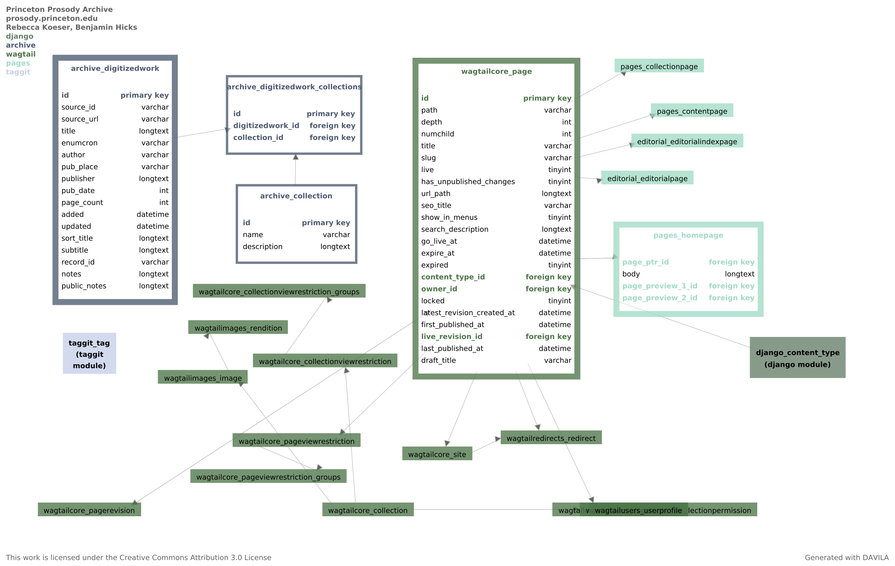
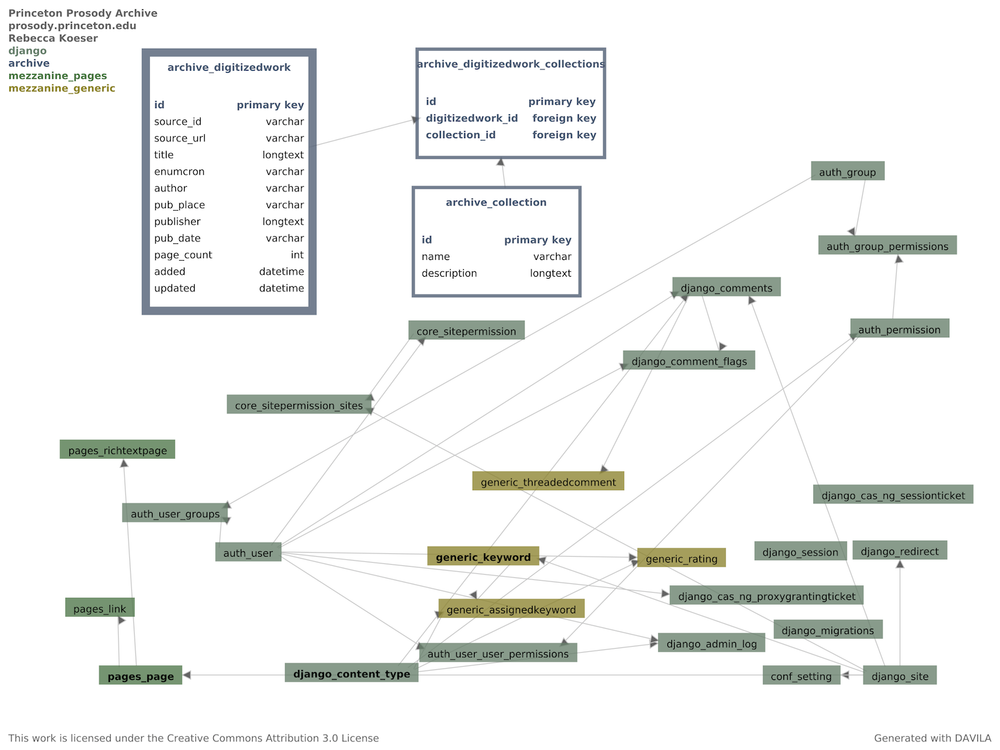

Architecture¶
The PPA Django application uses a SQL database as a thin layer to provide administrative management and reporting at the level of Digitized Work, and a Solr index for search and browse on Digitized Work metadata and page content.
Database¶
3.7 updates¶
DigitizedWorkhas new fields to support excerpts and articles as well as full works: * Item Type (full work, article, or excerpt, required) * Book/Journal Title * Digital Page Range (used to determine pages to be indexed for the excerpt) * Original page range (used for display)
3.1 Updates¶
Add optional
photoonPersonto support displaying photos on the contributor page.Add new
protected_fieldstoDigitizedWorkto enable preserving local edits to HathiTrust metadata.
Wagtail (Release 0.10)¶
{kind=link}
The primary purpose of this database revision is to remove Mezzanine and add Wagtail as the CMS employed by the project. The pages module represents the various page types (constituting separate Django apps) that are all subclasses of Wagtail’s base page model (expanded for detail with one example of the subclassed types).
Collections (Release 0.6)¶
{kind=link}
This database revision adds Collections to the schema, as well as some generic functionality import from Mezzanine as the result of using its rich text field for the description field of Collections.
Initial Schema (Release 0.5)¶

As of version 0.5, PPA is basically a stock Django/Mezzanine application with a single database table to track imported Digitized Works.
Solr¶
Content is indexed in Solr under two item types: “work”, which contains the bibliographic metadata for a digitized work, and “page”, which contains the text content for an individual page. Work and corresponding pages are both indexed with source_id, e.g. HathiTrust id for Hathi materials, to allow grouping work and pages together in search results.